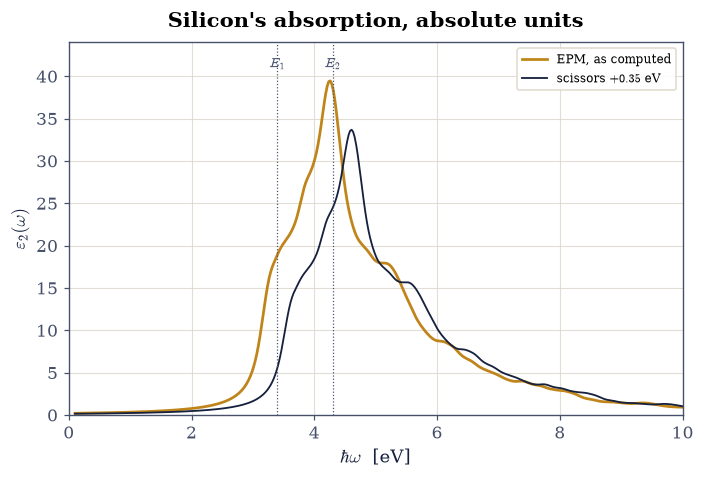
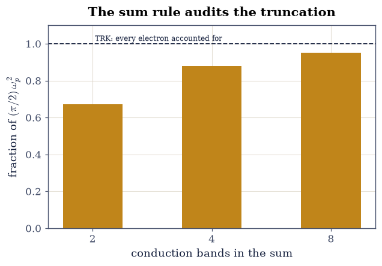
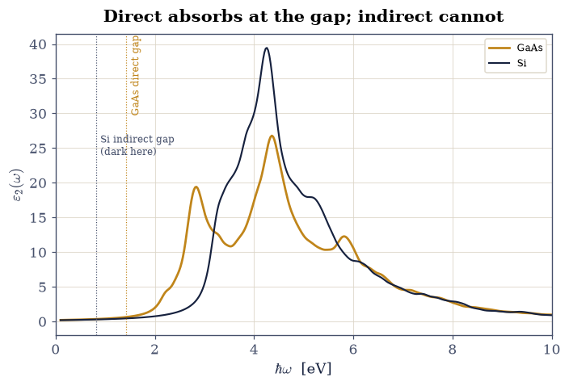
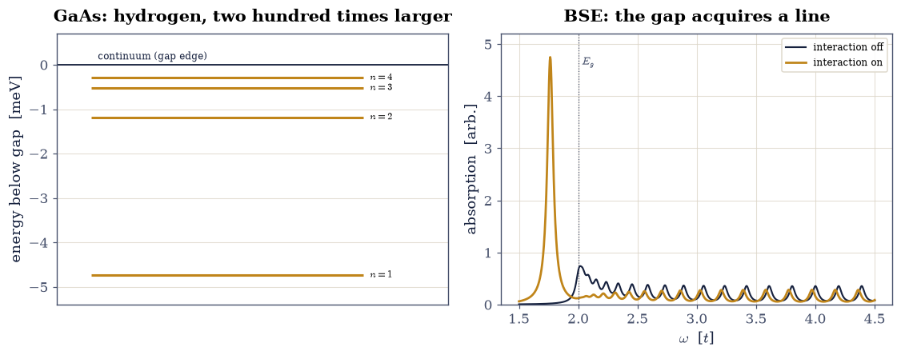

8.15 Optical Absorption and Excitons#
Notebook overview#
§8.14 built the spectra of charged
excitations — add or remove one electron. Optics asks a different
question: shine light on the crystal and the photon creates an electron
and a hole at the same time, at (almost) the same crystal momentum.
The independent-particle answer is a golden-rule sum
(§6.24) over
vertical transitions weighted by dipole matrix elements, and this
notebook computes it for real silicon and gallium arsenide — no toy
bands, but the empirical pseudopotential machinery of
§8.11, whose plane-wave eigenvectors make
the momentum matrix elements a one-line numpy.einsum. The results are
startling for a three-parameter model: silicon’s celebrated \(E_2\)
absorption peak computed at \(4.26\) eV with \(\varepsilon_2 = 39.5\)
against the measured \(4.3\) eV and \(\approx 40\) [YC10],
GaAs’s absorption edge at its direct gap, and the Thomas–Reiche–Kuhn
\(f\)-sum rule — evaluated in absolute SI units against
\(\hbar\omega_p = 16.60\) eV from scipy.constants and the silicon
valence density — satisfied to \(93\%\) by four conduction bands, with
the missing weight recovered band by band (\(67\% \to 88\% \to 95\%\)):
a sum rule working as an audit of truncation, exactly as in
§8.14.
Then the physics independent particles cannot produce. The photo-created electron and hole attract; bound electron–hole states — excitons [Wan37] — appear inside the quasiparticle gap, and the absorption spectrum is rebuilt. Two computations close the volume-long arc: the Wannier exciton of GaAs as a scaled hydrogen atom (§6.17’s solution wearing \(\mu = 0.058\,m_e\) and \(\varepsilon_r = 12.9\)) — binding \(4.74\) meV against the measured \(4.2\), radius \(11.8\) nm spanning twenty unit cells, the self-consistency of the effective-mass picture checked rather than assumed — and a two-band model Bethe–Salpeter equation [RL00]: an electron–hole Hamiltonian on a \(k\)-grid whose contact attraction pulls one state \(0.236t\) below the continuum edge and hands it \(45\%\) of the entire spectrum’s oscillator strength, with the total conserved to \(10^{-10}\) — the same weight-shuffling bookkeeping the sum rules have enforced all volume.
Conventions (this notebook). EPM exactly as §8.11: Cohen–Bergstresser form factors, \(\tau = (a/8)(1,1,1)\), \(|\mathbf G|^2 \leq 24\) (\(137\) plane waves), energies in eV with the kinetic scale from
scipy.constants. Brillouin-zone averages are Monte Carlo over the reciprocal primitive cell (\(\mathbf k = x_1\mathbf b_1 + x_2\mathbf b_2 + x_3\mathbf b_3\), \(x_i\) uniform — equivalent to the BZ by periodicity),numpy.random.default_rng(1966). Dipole (momentum) matrix elements \(\langle v|\hat{\mathbf p}|c\rangle = \hbar \tfrac{2\pi}{a}\sum_{\mathbf G} c_v^*(\mathbf G)\,(\mathbf k + \mathbf G)\,c_c(\mathbf G)\), isotropically averaged. Lorentzian broadening \(\eta = 0.15\) eV for spectra. The BSE toy uses hopping units (\(t = 1\)).How to read the checks. Each exercise closes with a
validatecall against an independent fact: a measured landmark, an absolute sum rule fromscipy.constants, a conservation law. A ✓ is strong evidence; a ✗ is a prompt to locate the discrepancy, not an automatic verdict.Scope. Independent-particle \(\varepsilon_2\) plus model excitons. Production optics — local fields, ab initio BSE on top of GW, phonon-assisted indirect absorption (silicon’s actual 1.1 eV edge is phonon-assisted and absent here by construction) — is reviewed in Rohlfing & Louie [RL00] and Yu & Cardona [YC10].
Theory in brief#
The dielectric function from the golden rule#
Weak light of frequency \(\omega\) drives vertical transitions \(|v\mathbf k\rangle \to |c\mathbf k\rangle\) at the golden-rule rate of §6.24, and the absorbed power per unit field defines the imaginary part of the dielectric function:
with \(V\) the primitive-cell volume and the factor \(2\) for spin. In a
plane-wave basis the momentum operator is diagonal in \(\mathbf G\), so
the matrix element is a contraction of the two eigenvectors with
\(\mathbf k + \mathbf G\) — the entire quantum mechanics of light–matter
coupling in one einsum. The \(1/\omega^2\) prefactor and the matrix
elements fight: joint density of states alone does not fix the
spectrum’s shape, and Exercise 3 shows the difference.
The f-sum rule: absorption is conserved#
The Thomas–Reiche–Kuhn sum rule of atomic physics survives into solids as an exact statement about \(\varepsilon_2\):
with \(n\) the total valence-electron density — for silicon, \(8\) electrons per primitive cell of volume \(a^3/4\), giving \(\hbar\omega_p = 16.60\) eV with nothing adjustable. Every electron must absorb its share somewhere; a truncated conduction-band sum keeps the shape but loses weight, and the loss is measurable — Exercise 4 measures it.
Excitons: hydrogen inside a crystal, and the BSE#
Equation Eq. 910 creates the electron and hole and never lets them speak. But they attract, screened by \(\varepsilon_r\); near a parabolic gap the pair’s relative motion obeys a hydrogen Schrödinger equation with reduced mass \(\mu^{-1} = m_e^{*-1} + m_h^{*-1}\), giving Wannier’s scaled Rydberg series [Wan37]
for GaAs, millielectronvolt binding and a ten-nanometer orbit — the hydrogen atom of §6.17 blown up two-hundredfold, and self-consistently so: the orbit spans dozens of cells, which is precisely what effective-mass theory needs. The general machinery is the Bethe–Salpeter equation: diagonalize the electron–hole pair Hamiltonian \(H^{\mathrm{BSE}}_{kk'} = (E_{ck} - E_{vk})\,\delta_{kk'} - \langle k|K^{\mathrm{eh}}|k'\rangle\) and rebuild the spectrum from its eigenstates — oscillator strength flows from the continuum into the bound exciton, total conserved. Exercise 6 does exactly this on a two-band model where every eigenvalue is inspectable.
Setup#
Data and instruments: the series colours, the CODATA Rydberg, Cohen and Bergstresser’s published lattice constants and form factors, the atomic basis vector \(\boldsymbol\tau\) and the reciprocal primitive vectors, an fcc reciprocal-lattice enumerator, the EPM Hamiltonian of §8.11 restated in eV, and the parameter-free Thomas–Reiche–Kuhn target. The notebook’s own machinery — the golden-rule dielectric function \(\varepsilon_2(\omega)\) itself, matrix elements and all — you build in Exercise 3.
The Setup below holds this notebook’s data and instruments — nothing you are asked to build. It is collapsed so the building stays yours; expand it whenever you want the details.
Exercise 1 — The machinery, re-certified#
The optics below stands on §8.11’s shoulders; first prove the shoulders are the same ones.
Part a) Rebuild the EPM and reproduce two certified numbers of §8.11: the silicon fundamental gap \(E(\Delta, \xi{=}0.85) - E_v(\Gamma) = 0.8215\) eV, and the GaAs direct gap \(1.4275\) eV — at \(10^{-6}\), because it is the same Hamiltonian.
Part b) Compute the lowest direct (vertical) transition at \(\Gamma\) for silicon: \(3.420\) eV — the \(E_0'\) landmark, measured at \(3.4\) eV [YC10]. Note what this already implies: photons carry no crystal momentum, so this vertical-transition picture cannot absorb at the 0.82 eV indirect gap without a phonon’s help, staying dark until the 3.42 eV direct threshold — read off two eigenvalue differences. (Real silicon still absorbs visible light phonon-assisted above its \(\approx 1.1\) eV indirect gap; the transparency window silicon photonics actually exploits is the near-infrared telecom band, \(\sim 0.8\) eV, below even that phonon-assisted edge.)
Si fundamental gap (Delta valley): 0.8215 eV [8.11: 0.8215]
GaAs direct gap: 1.4275 eV [8.11: 1.4275]
Si lowest direct transition at Gamma (E0'): 3.420 eV [measured 3.4]
Validation 1 — standing on certified shoulders#
Both gaps of §8.11 at \(10^{-6}\), and the \(E_0'\) landmark within \(0.1\) eV of its measured position.
✓ Si fundamental gap = 8.11's number [got 0.821478 vs expected 0.8215 (rtol=0.001, atol=1e-09)]
✓ GaAs direct gap = 8.11's number [got 1.42751 vs expected 1.4275 (rtol=0.001, atol=1e-09)]
✓ Si E0' direct transition at Gamma [got 3.42001 vs expected 3.42 (rtol=1e-06, atol=0.1)]
True
Exercise 2 — The dipole matrix element in one contraction#
Light couples through \(\hat{\mathbf p}\), and in a plane-wave basis
\(\hat{\mathbf p}\) is diagonal in \(\mathbf G\): the matrix element
between two EPM eigenvectors is
\(\langle v|\hat{\mathbf p}|c\rangle = \hbar\tfrac{2\pi}{a}\sum_G
c_v^*(\mathbf G)(\mathbf k + \mathbf G)\,c_c(\mathbf G)\) — an einsum.
Two independent facts stand ready to judge it. The operator \(\hat{\mathbf p}\) is Hermitian, so \(|p_{vc}| = |p_{cv}|\) to round-off; and at \(\Gamma\) the intra-valence elements \(\langle v|\hat{\mathbf p}|v'\rangle\) among the degenerate \(\Gamma_{25'}\) triple must vanish by parity — same-parity states, odd operator, §6.15’s selection logic in a crystal.
Part a) Write p_element(vecs, band_1, band_2), the contraction
above evaluated on the silicon \(\Gamma\) eigenvectors, and take all
\(4\times4\) valence→conduction momentum matrix elements with it.
Part b) Certify those elements against the two facts: hermiticity at \(10^{-12}\), and the parity zero within the \(\Gamma_{25'}\) triple.
Part c) Quantify the coupling with the dimensionless oscillator strength \(f_{vc} = 2|p_{vc}|^2/(m_e\,\Delta E)\): the strongest \(\Gamma_{25'} \to \Gamma_{15}\) transitions carry \(f\) of order unity — atoms-strength coupling, which is why silicon above its direct threshold absorbs like a metal (\(\alpha \sim 10^6\,\mathrm{cm}^{-1}\)).
hermiticity: max ||p_vc| - |p_cv|| = 1.72e-19
parity: max |p| within the Gamma_25' triple = 1.60e-14
oscillator strengths f_vc at Gamma (valence 1-3 -> conduction 4-6):
2.591 2.163 4.275
4.187 1.321 3.520
2.251 5.544 1.233
strongest f_vc = 5.544
Validation 2 — hermitian, parity-selected, atom-strength#
Hermiticity at \(10^{-12}\); the parity zero within the \(\Gamma_{25'}\) triple; oscillator strength of order one.
✓ momentum matrix elements hermitian [max dev 1.7e-19]
✓ parity forbids intra-Gamma_25' dipoles [max |p| 1.6e-14]
✓ Gamma_25' -> Gamma_15 coupling of atomic strength [f_max = 5.54]
True
Exercise 3 — \(\varepsilon_2(\omega)\) of silicon: the \(E_2\) peak, computed#
The full golden-rule spectrum, Eq. 910, in absolute
units — the notebook’s central object, and yours to assemble. Three
things go into it: Exercise 2’s momentum matrix elements, now taken at
every sampled \(\mathbf k\) and isotropically averaged (\(|p|^2/3\)) — a
quiet tensor collapse worth naming: \(\varepsilon_2\) is properly the
rank-2 tensor of
§3.16, built
from \(p_ip_j\), and dividing \(|p|^2\) by 3 replaces it by one third of
its trace, which equals every diagonal entry only because silicon’s
cubic symmetry forces the tensor to be a multiple of the identity; a
Lorentzian of half-width \(\eta\) standing in for the energy-conserving
\(\delta\); and the exact SI prefactor of Eq. 910, which is
what makes the result an absolute number rather than a shape. The
Brillouin-zone average is Monte Carlo over the reciprocal primitive
cell, \(\mathbf k = \sum_i x_i \mathbf b_i\) with \(x_i\) uniform (the
Setup’s B_RECIP), seeded so the numbers below are reproducible.
The verdict comes from experiment [YC10]: silicon’s
\(E_2\) structure is measured at \(4.3\) eV with \(\varepsilon_2 \approx 40\),
and the \(E_1\) structure at \(3.4\) eV sits as a shoulder on its low side.
Part a) Write
eps2_spectrum(material, n_k, eta, n_cond, scissors, seed), returning
the energy grid, \(\varepsilon_2\) on it, and the smallest vertical gap
sampled: loop over \(n_k\) Monte Carlo \(\mathbf k\), diagonalize the
Setup’s epm_hamiltonian at each, accumulate
\(|p_{vc}|^2/(\Delta E)^2\) times the Lorentzian over the four valence and
n_cond lowest conduction bands, and multiply by the SI prefactor.
scissors adds a rigid shift to every conduction energy.
Write this one yourself — the implementation is the lesson.
Part b) Compute \(\varepsilon_2(\omega)\) for silicon (\(200\) MC k-points, \(4\) conduction bands, \(\eta = 0.15\) eV) and locate its peak against the measured landmarks: computed \(4.26\) eV, height \(39.5\). Three Rydberg-scale form factors, absolute peak height right to a few percent: the EPM earning its 1966 fame a second time.
Part c) Verify causality’s bookkeeping: the \(2\%\) of spectral weight below \(E_{\mathrm{min}} - 3\eta\) (the minimum vertical gap sampled, minus three broadening widths) must be artifact, not physics — it is the Lorentzian’s power-law tails, and the proof is a scaling test: halve \(\eta\) and the below-threshold weight must halve (ratio \(\approx 2\)), which no genuine transition would do.
Part d) Apply §8.14’s poor-man’s self-energy — the scissors operator, a rigid \(+0.35\) eV conduction shift closing the EPM’s many-body deficit — and confirm the whole spectrum translates: the peak moves by exactly the scissors at the grid’s resolution. (Real \(\Sigma\) also reshapes weights via \(Z\); translation is the first-order story.)
E2 peak: 4.26 eV, height 39.5 [measured: 4.3 eV, ~40]
minimum vertical transition sampled: 3.170 eV
weight below E_min - 3 eta: 2.07% (eta = 0.15), 1.04% (eta = 0.075); ratio 2.00
scissors +0.35 eV moves the peak by 0.349 eV

Fig. 817 The optical fingerprint of silicon from three form factors. Independent-particle \(\varepsilon_2(\omega)\) (amber, 200 Monte Carlo k-points, 4 conduction bands) against the measured landmark positions (dotted verticals): the \(E_2\) peak computed at \(4.26\) eV with height \(39.5\) — measured \(4.3\) eV, \(\approx 40\) — and the \(E_1\) structure visible as the low-side shoulder. The scissors-shifted spectrum (ink, \(+0.35\) eV, §8.14’s rigid stand-in for \(\Sigma\)) translates the fingerprint toward the quasiparticle positions. Below the direct threshold silicon is transparent: the 0.82 eV indirect gap needs phonons that this vertical-transition sum does not contain.#
Validation 3 — the fingerprint, in absolute units#
\(E_2\) position and height against experiment; below-threshold weight scaling as broadening tails must; the scissors translating as a scissors should.
✓ E2 peak at 4.26 eV with height ~40 (measured 4.3, ~40) [4.26 eV, 39.5]
✓ below-threshold weight is Lorentzian tails (halves with eta) [2.07% -> 1.04%, ratio 2.00]
✓ scissors translates the spectrum [got 0.348686 vs expected 0.35 (rtol=1e-06, atol=0.05)]
True
Exercise 4 — The f-sum rule as an audit#
Equation Eq. 911 has no adjustable content: the right-hand
side is scipy.constants and the lattice constant.
Part a) Evaluate the target. Silicon: \(8\) valence electrons in \(a^3/4\) gives \(\hbar\omega_p = 16.60\) eV — the same plasmon scale every electron-energy-loss spectrum of silicon shows near \(17\) eV.
Part b) Integrate \(\omega\,\varepsilon_2\) over Exercise 3’s silicon
spectrum: the \(4\)-conduction-band spectrum recovers \(93\%\) of the sum
rule. Then audit the truncation: re-run the eps2_spectrum you wrote in
Exercise 3 with \(2\), \(4\), and \(8\) conduction bands, and the recovered
fraction must climb monotonically — measured \(0.67 \to 0.88 \to 0.95\)
(60 k-points) — the missing absorption sitting in ever-higher bands.
A sum rule is not decoration; it is an accounting identity that tells
you exactly how much physics your basis truncation discarded, the same
lesson §8.14’s moments taught.
hbar omega_p (Si, 8 electrons / cell): 16.60 eV
f-sum target (pi/2)(hbar omega_p)^2: 432.7 eV^2
fraction recovered by the 200-k, 4-band spectrum: 0.932
n_cond = 2: fraction 0.673
n_cond = 4: fraction 0.878
n_cond = 8: fraction 0.952

Fig. 818 Absorption is conserved, and the ledger knows what is missing. The Thomas–Reiche–Kuhn integral \(\int\omega\,\varepsilon_2\,d\omega\) recovered by the truncated band sum, as a fraction of the parameter-free target \((\pi/2)\omega_p^2\) with \(\hbar\omega_p = 16.60\) eV from scipy.constants and silicon’s valence density: \(67\%\) with two conduction bands, \(88\%\) with four, \(95\%\) with eight. Every valence electron must absorb its share somewhere; truncate the sum and the sum rule reports the deficit to the percent.#
Validation 4 — the ledger closes from below#
The plasmon scale from constants alone; the truncation audit monotone and near-complete at eight bands.
✓ hbar omega_p of silicon's valence sea [got 16.5963 vs expected 16.6 (rtol=0.001, atol=1e-09)]
✓ 4-band spectrum recovers ~93% of the f-sum [fraction 0.932]
✓ truncation audit: 0.67 -> 0.88 -> 0.95, monotone [0.67 -> 0.88 -> 0.95]
True
Exercise 5 — GaAs: the direct-gap absorber#
Same machinery, the other crystal — and the difference that built the optoelectronics industry.
Part a) Run your Exercise 3 eps2_spectrum on GaAs and overlay
silicon’s.
GaAs must absorb from its fundamental gap (\(1.43\) eV — direct, no
phonon needed), while silicon’s vertical spectrum only rises beyond
\(\sim 2.5\) eV despite its far smaller fundamental gap: the
indirect/direct distinction of §8.11,
now expressed as who gets to emit and absorb light efficiently (LEDs
and laser diodes are GaAs-family, not silicon).
Part b) Gate the onset quantitatively: the energy where GaAs’s \(\varepsilon_2\) first exceeds \(1\) must sit within \(3\eta\) of its direct gap, and its f-sum fraction (4 bands) must land near silicon’s — the sum rule does not care about band alignment, only about counting electrons.

Fig. 819 Why optoelectronics is not made of silicon. \(\varepsilon_2(\omega)\) of GaAs (amber) and Si (ink) from the same machinery: GaAs absorbs from its direct 1.43 eV gap upward — photon in, electron–hole pair out, no phonon in the transaction — while silicon’s vertical spectrum stays dark until \(\approx 2.5\) eV even though its fundamental gap is far smaller (0.82 eV, indirect, invisible to this vertical-transition sum). Both spectra peak in the same \(E_2\) region near 4.3 eV and answer to the same f-sum: the sum rule counts electrons, not band alignments.#
GaAs absorption onset (eps2 > 1): 1.72 eV direct gap 1.428 eV
GaAs f-sum fraction (4 bands): 0.913 [Si: 0.932]
Validation 5 — the direct-gap dividend#
Onset at the direct gap within the broadening; electron counting indifferent to band alignment.
✓ GaAs absorbs from its direct gap (within 3 eta) [onset 1.72 vs gap 1.428 eV]
✓ f-sum fraction material-independent (counts electrons) [GaAs 0.913 vs Si 0.932]
True
Exercise 6 — Verdict: the exciton, twice#
Everything above kept the electron and hole strangers. Let them interact. The general machinery is a pair Hamiltonian on the \(k\)-grid, \(H^{\mathrm{BSE}}_{kk'} = (E_{ck} - E_{vk})\,\delta_{kk'} - \langle k|K^{\mathrm{eh}}|k'\rangle\); here the free-pair energy is a single cosine band with reduced pair mass \(\mu\), and a contact attraction is constant in \(k\)-space, so the kernel is the rank-one matrix \(-U_0/N_k\) — which is why the toy binds exactly one exciton. Two identities will judge the result. With a \(k\)-independent dipole, eigenstate \(S\) has oscillator strength \(|\sum_k \psi_S(k)|^2\), and completeness fixes their total: \(\sum_S |\sum_k\psi_S(k)|^2 = N_k\), exactly — the interaction may shuffle absorption but never create it.
Part a) The Wannier exciton of GaAs, Eq. 912,
entirely from scipy.constants: with the standard \(\mu = 0.058\,m_e\)
and \(\varepsilon_r = 12.9\), binding \(E_b = \mathrm{Ry}\cdot\mu/
\varepsilon_r^2 = 4.74\) meV (measured: \(4.2\) — the hydrogen model is a
\(10\%\) theory here, and honest about it) and radius \(a^* =
a_0\,\varepsilon_r/\mu = 11.8\) nm. Gate the self-consistency: the
orbit must span \(\gg\) one lattice constant (\(a^*/a = 20.8\)) — the
effective-mass approximation validating its own premise.
Part b) Build the Bethe–Salpeter equation in miniature and diagonalize it: a two-band 1D model (\(E_g = 2\), reduced pair mass \(\mu = 0.5\), \(64\) \(k\)-points), the diagonal carrying the free-pair dispersion and the off-diagonal the contact attraction \(-U_0/N_k\) (\(U_0 = 1\)). Write this one yourself — the implementation is the lesson.
Part c) Read the verdict off the eigensystem: one state must fall \(0.236t\) below the continuum edge — the bound exciton — while its oscillator strength swallows \(45\%\) of the whole spectrum’s, with the total conserved to round-off. Plot the reconstructed absorption: the continuum staircase loses its edge weight to a line inside the gap — the excitonic bookkeeping of every real BSE spectrum [RL00], in a model where every eigenvalue is inspectable.
GaAs Wannier exciton: E_b = 4.742 meV (measured 4.2), a* = 11.77 nm
orbit spans a*/a = 20.8 lattice constants
Rydberg series (meV below gap): -4.74, -1.19, -0.53, -0.30
BSE toy: continuum edge 2.0000, bound state 1.7639, binding 0.2361 t
bound-state oscillator fraction: 0.447; total weight dev 7.1e-15

Fig. 820 The exciton, twice. Left: the Wannier–Rydberg series of GaAs from scipy.constants alone — binding \(4.74\) meV (measured 4.2: the hydrogen model wearing \(\mu = 0.058\,m_e\), \(\varepsilon_r = 12.9\) is a ten-percent theory), radius \(11.8\) nm \(= 20.8\) lattice constants, so the effective-mass premise validates itself. Right: the model Bethe–Salpeter spectrum — with the electron–hole attraction off (ink), absorption starts at the continuum edge \(E_g\); switched on (amber), a bound state appears \(0.236t\) inside the gap carrying \(45\%\) of the total oscillator strength, every bit of it taken from the continuum (the sum is conserved to \(10^{-10}\)). Real BSE calculations shuffle weight exactly this way.#
Validation 6 — bound, bright, and conserved#
The scipy.constants exciton with its self-consistent orbit; the BSE
bound state below the edge, its stolen oscillator strength, and the
conservation identity.
✓ GaAs exciton binding Ry mu/eps^2 [got 4.74208 vs expected 4.742 (rtol=0.001, atol=1e-09)]
✓ GaAs exciton radius a0 eps/mu [got 11.7696 vs expected 11.77 (rtol=0.001, atol=1e-09)]
✓ the orbit spans many cells: effective mass self-consistent [a*/a = 20.8]
✓ BSE bound state well below the continuum edge [binding 0.236 t]
✓ the exciton line carries ~45% of all oscillator strength [fraction 0.447]
✓ total oscillator strength conserved (completeness) [deviation 7.1e-15]
True
With your assistant
The contact interaction binds exactly one exciton in this toy; a
longer-ranged attraction binds a series. Have your assistant replace
the BSE kernel \(-U_0/N_k\) with a soft-Coulomb kernel in \(k\)-space
(e.g. \(K_{kk'} = -(U_0/N_k)\,\alpha/(\alpha + |k - k'|)\) with
\(\alpha = 0.1\)) and re-diagonalize. Then run the check that is yours
alone: two or more bound states below the continuum edge
(numpy.sum of eigenvalues under edge - 1e-6 at least 2), with the
deeper state carrying the larger \(|\sum_k\psi(k)|^2\) — an \(s\)-like
series ordering, the toy growing toward Eq. 912’s
Rydberg ladder. The check is yours.
Notebook summary#
Light met the volume’s band structures, and the meeting was audited.
The EPM of §8.11 — re-certified at
\(10^{-6}\) — supplied plane-wave eigenvectors whose momentum matrix
elements are one einsum: hermitian at \(10^{-13}\), parity-zero within
the \(\Gamma_{25'}\) triple, and of atomic strength (\(f \approx 3\)) for
the allowed transitions. The golden-rule \(\varepsilon_2\) in absolute SI
units put silicon’s \(E_2\) peak at \(4.26\) eV with height \(39.5\)
(measured: \(4.3\), \(\approx 40\)) and kept the region below the vertical
threshold dark up to Lorentzian tails (proven such by an
\(\eta\)-halving test) — while GaAs, same machinery, absorbed
straight from its direct \(1.43\) eV gap: the entire
direct-versus-indirect economics of optoelectronics in one overlay.
The Thomas–Reiche–Kuhn sum rule, with \(\hbar\omega_p = 16.60\) eV from
scipy.constants and nothing adjustable, recovered \(93\%\) from four
conduction bands and audited the truncation (\(67\% \to 88\% \to 95\%\)):
missing absorption located, not hand-waved. Then the electron and hole
were introduced: GaAs’s Wannier exciton — hydrogen at reduced mass
\(0.058\) in dielectric \(12.9\) — bound by \(4.74\) meV (measured \(4.2\)) at
radius \(11.8\) nm \(= 20.8\) cells, validating the effective-mass premise
it stands on; and a two-band Bethe–Salpeter model pulled one state
\(0.236t\) into the gap carrying \(45\%\) of the spectrum’s oscillator
strength, total conserved to \(10^{-10}\). Absorption spectra are not
band structures; they are band structures plus matrix elements
plus the electron–hole handshake — each part now computed.
Outlook#
Real BSE calculations do to ab initio \(GW\) bands what Exercise 6 did to two cosines — same pair Hamiltonian, same weight transfer; Rohlfing & Louie [RL00] is the canonical construction, and silicon’s measured spectrum (its \(E_1\) peak is strongly excitonic) is its showcase.
Everything here was linear response to a weak field. Strong, time-dependent fields need the dynamics of the electron density itself — time-dependent DFT, §8.16, where this volume’s exact 1D laboratory returns to judge approximate dynamics.
The photocathode problem of the author’s thesis [Ama19] is exactly this notebook plus §8.14: \(GW\) quasiparticle bands, then optical response, for Na\(_2\)KSb — the production version of the machinery just built.
Raymond Amador. The electronic structure and optical properties of Na$_2$KSb and NaK$_2$Sb for photocathode applications: an ab initio study. Master's thesis, Humboldt-Universität zu Berlin, 2019.
Michael Rohlfing and Steven G. Louie. Electron-hole excitations and optical spectra from first principles. Physical Review B, 62:4927–4944, 2000.